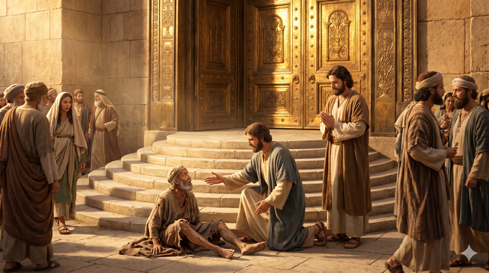
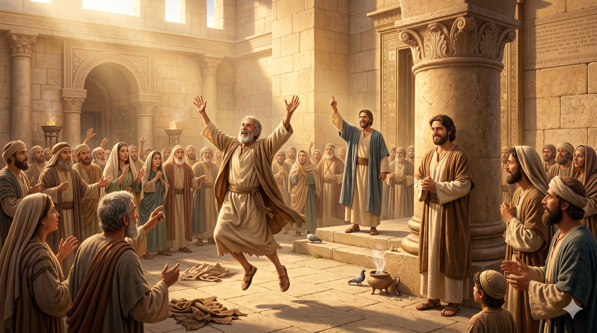

예루살렘 성전 미문(아름다운 문) 앞 — 베드로와 요한이 앉은뱅이에게 다가가는 장면, 요한은 묵묵히 베드로 곁에 서 있다
"베드로와 요한이 오후 세 시 기도 시간에 성전에 올라갈새, 나면서 못 걷게 된 이를 사람들이 데리고 오니 이는 성전에 들어가는 사람들에게 구걸하기 위하여 날마다 미문이라는 성전 문에 그를 앉히는 자라" — 사도행전 3:1–2
사도행전 3장의 미문 치유 기적에서 요한은 베드로와 함께 등장하지만, 말씀을 선포하거나 치유를 선언한 것은 베드로였습니다. 성경은 이 장면에서 요한이 어떤 말을 했는지 기록하지 않습니다. 그러나 그는 거기 있었습니다 — 베드로의 곁에, 그 기적의 현장에, 묵묵히 함께했습니다. 이것이 요한의 방식이었습니다. 화려한 언변이나 대담한 선언 대신, 신실하게 동역자의 옆을 지키는 것.
이 본문은 베드로와 요한이 여전히 함께 기도하고 함께 성전에 올라갔음을 보여줍니다. 오순절의 성령 강림 이후에도 두 사람의 동역은 계속되었습니다. 요한은 이 기적의 공동 목격자였으며, 이후 공회 앞에 함께 끌려가 심문을 받을 때도 베드로 곁에 서 있었습니다. 사도행전의 초기 역사에서 요한은 종종 "베드로와 함께"로 소개됩니다. 이것은 결코 2인자의 자리가 아니었습니다. 오히려 진정한 공동체적 사역의 아름다움이었습니다 — 혼자 빛나려 하지 않고, 함께 하나님의 일을 이루어가는 동역의 정신.

치유받은 사람이 뛰며 하나님을 찬양할 때 요한이 조용히 미소 짓는 장면 — 무대 뒤의 기쁨
오늘날 교회와 사역 현장에서 우리는 모두 '베드로의 역할'을 원하는 경향이 있습니다. 앞에 서서, 말씀을 선포하고, 기적을 일으키는 사람. 그러나 하나님 나라는 베드로와 같은 사람들만으로 이루어지지 않습니다. 요한과 같이, 묵묵히 옆에서 함께 기도하고, 동역자를 지지하고, 하나님이 역사하시는 현장을 함께 목격하며 증언하는 사람들이 있어야 합니다. 꼭 이름이 먼저 불리지 않더라도, 그 자리가 하나님 앞에서는 결코 작지 않습니다.
나는 지금 어떤 역할을 하고 있습니까? 혹시 내가 빛나지 못한다고 낙심하고 있지는 않습니까? 요한의 모습을 보십시오. 그는 누구보다 예수님과 가까웠던 사람이었지만, 공동체 안에서 자신의 자리를 겸손하게 받아들였습니다. 신실한 동역은 화려한 독주보다 훨씬 더 오래 지속되며, 더 깊은 열매를 맺습니다.
세상은 무대의 중심에 서는 사람을 기억하지만,
하나님은 신실하게 곁을 지키는 사람을 기억하십니다.
오늘도 누군가의 동역자로 묵묵히 서 있는 당신,
그 자리가 하나님 앞에서 아름답습니다.